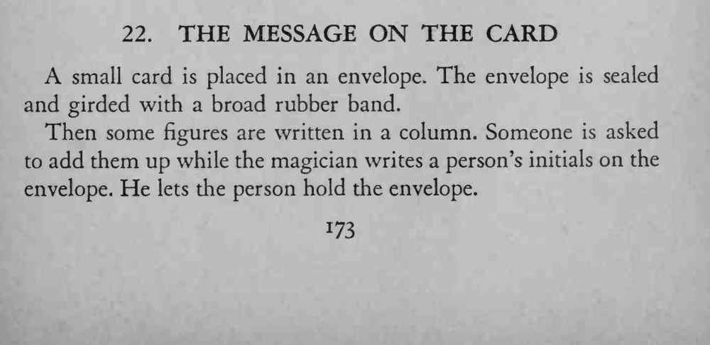
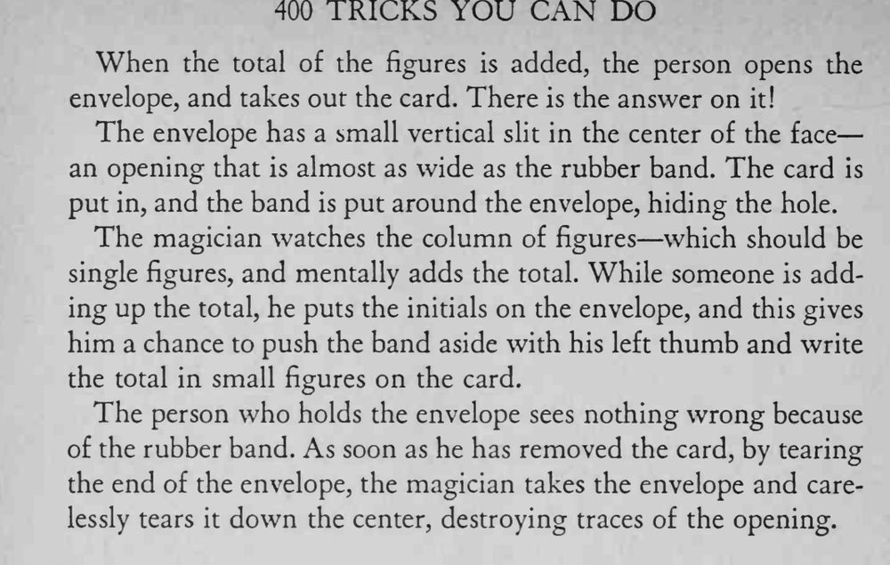

卡片封进信封、套上橡皮筋，观众算出数字总和后打开信封，卡片上竟写着答案。
写总数要快、字要小，橡皮筋必须把竖缝遮严。


A small card is placed in an envelope. The envelope is sealed and girded with a broad rubber band. Then some figures are written in a column. Someone is asked to add them up while the magician writes a person's initials on the envelope. He lets the person hold the envelope. When the total of the figures is added, the person opens the envelope, and takes out the card. There is the answer on it! The envelope has a small vertical slit in the center of the face an opening that is almost as wide as the rubber band. The card is put in, and the band is put around the envelope, hiding the hole. The magician watches the column of figures which should be single figures, and mentally adds the total. While someone is adding up the total, he puts the initials on the envelope, and this gives him a chance to push the band aside with his left thumb and write the total in small figures on the card. The person who holds the envelope sees nothing wrong because of the rubber band. As soon as he has removed the card, by tearing the end of the envelope, the magician takes the envelope and carelessly tears it down the center, destroying traces of the opening.